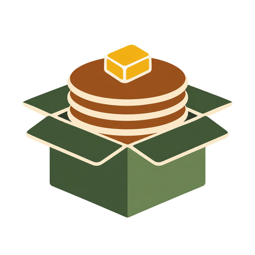
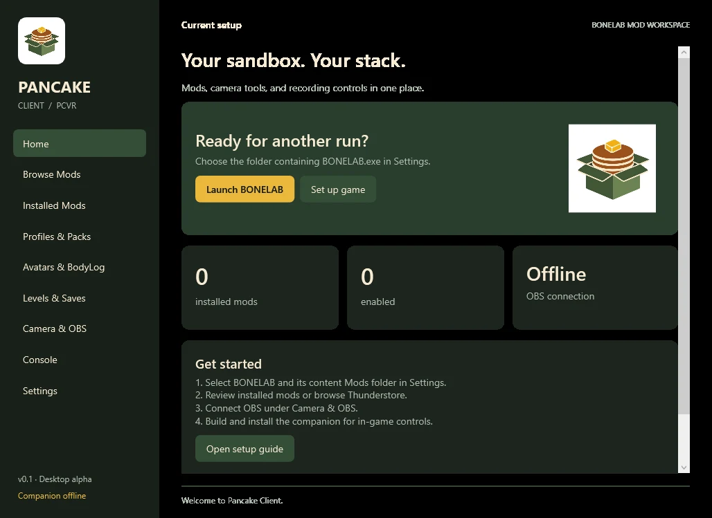

Your library, organized.
See installed code mods, plugins, and content. Enable or disable them reversibly while BONELAB is closed.
LOCAL MOD LIBRARY
PancakeClientBring your mods, profiles, camera, and OBS together. Less time sorting folders. More time making a mess.
Windows x64 / Desktop alpha v0.1 / Steam & Meta PC
One home for your BONELAB setup. Check your library, find something new, or get your next session ready.

Actual desktop app screenshots. The in-game companion is still awaiting headset validation.
The essentials for managing a modded PCVR setup, with room to grow.
See installed code mods, plugins, and content. Enable or disable them reversibly while BONELAB is closed.
LOCAL MOD LIBRARYSearch the live Thunderstore catalog, inspect dependencies, and download mod ZIPs. Code dependencies still need manual installation.
THUNDERSTORE BROWSERCapture enabled mod states in profiles. Import, export, and restore them with automatic snapshots before applying changes.
PROFILES & SNAPSHOTSBack up a selected save folder, import content-only mod ZIPs, and inspect or export your MelonLoader logs.
BACKUPS & DIAGNOSTICSGive your camera a dedicated home—and OBS a seat at the table.
Switch OBS scenes, start or stop recording, control streaming, and mute your microphone from the desktop. The optional companion brings these controls into Pancake’s BoneMenu inside BONELAB.
Read the camera & OBS guideThe companion needs a local build with your game’s assemblies and BoneLib. Use BONELAB’s normal mirror capture in OBS for full-quality headset footage.
Download the latest successful Windows build from GitHub Actions. Sign in to GitHub, grab the PancakeClient-win-x64 artifact, and extract the entire ZIP.
Run PancakeClient.exe. Detect your Steam installation or select your Meta PC game folder, then review your mod library.
Enable OBS’s WebSocket server, then connect in Camera & OBS. For in-game controls, build and install the optional companion using the setup guide.
Download and extract the source ZIP. Open PowerShell in the folder containing src and scripts. Install the .NET 8 SDK, compatible MelonLoader, and BoneLib. Launch BONELAB once, then close it.
dotnet build .\src\Pancake.Companion -c Release "-p:GameDir=F:\SteamLibrary\steamapps\common\BONELAB"Replace the game path with yours. Install the resulting DLL using Pancake Client → Settings → Install companion DLL.
Download source ZIP ↗Grab the Windows desktop alpha and make yourself at home.
Get the latest Windows buildGitHub sign-in required for build artifacts. Extract the whole ZIP before launching.
The desktop builds and core checks pass in CI. The companion still needs in-game VR testing. Integrated mod.io downloads, automatic dependency installation, avatar editing, and level loading are on the roadmap.